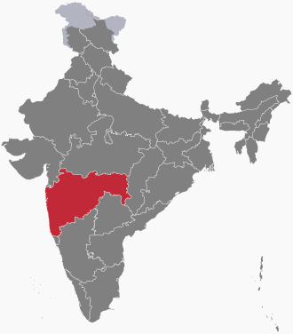

Problem Statement
Many students in rural areas of India have limited exposure to structured instruction in mental math and foundational technology topics that are not typically emphasized in standard school curricula. Access to free, supplementary education in these areas is constrained by limited technology availability and inconsistent instructional resources. BaseTen addresses this gap by providing free, structured lessons in math and technology concepts that students would otherwise not encounter.
Target Population
- Location: Maharashtra, India
- Age range: 8-16
- Device access: Shared computers
- Internet access: Standard connectivity
- Primary language: Marathi

Curriculum
Digital Literacy
- Google Docs
- Google Slides
- Google Sheets
- Concepts aligned with the AP Computer Science Principles curriculum
Programming
- Python
- Java
- Syntax, problem-solving, and small program development
Mental Math and Mathematics
- Arithmetic with integers, fractions, mixed numbers, and decimals
- Order of operations and distributive property
- Fraction and decimal comparison
- Multiplication shortcuts and squaring numbers
- Unit conversions including percent, metric, time, and numerals
- GCD and LCM
- Percent, remainder, and consumer-style problems
- Mean, median, and mode
- Number theory concepts including primes and divisors
- Powers, roots, ratios, proportions, and absolute value
- Algebraic topics including equations, systems, sequences, and quadratics
- Geometry topics including perimeter and area
- Base system conversions and set operations